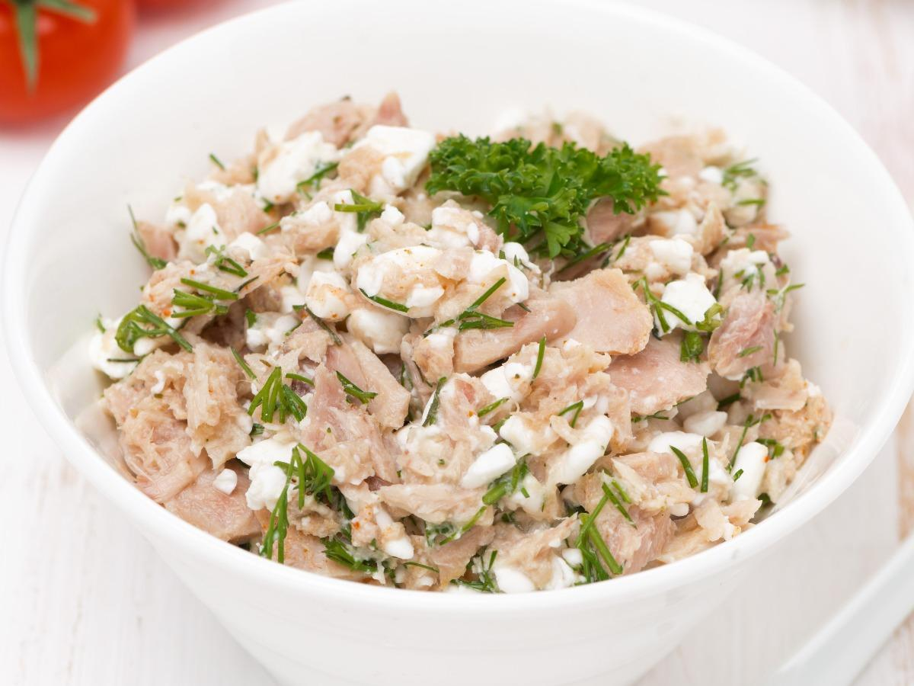

Cottage cheese tuna salad

Description
Here's a simple and healthy recipe for Cottage Cheese Tuna Salad. It's packed with protein and makes for a light, yet filling meal.
Ingredients
- 1 can (5 oz) tuna in water or oil, drained and flaked
- 1/2 cup cottage cheese (preferably full-fat or low-fat, depending on your preference)
- 1/4 cup diced cucumber
- 1/4 cup diced celery
- 2 tbsp red onion, finely chopped
- 1 tbsp fresh dill, chopped (or 1 tsp dried dill)
- 1 tbsp lemon juice
- 1 tsp Dijon mustard (optional)
- Salt and pepper, to taste
- A few leaves of mixed greens (optional, for serving)
Steps
- Prepare the tuna: Drain the can of tuna and flake it with a fork in a medium-sized bowl.
- Mix the base: Add the cottage cheese to the bowl with the tuna. Stir to combine, creating a creamy base.
- Add the veggies: Stir in the diced cucumber, celery, and red onion.
- Season: Add lemon juice, Dijon mustard (if using), fresh dill, and a pinch of salt and pepper. Taste and adjust seasoning as needed.
- Optional add-ins: If you want to make it more hearty, toss in any of the optional ingredients like chopped tomatoes, olives, or capers.
- Serve: You can serve this tuna salad on a bed of mixed greens, or simply enjoy it on its own or with whole-grain crackers.
Back to main site